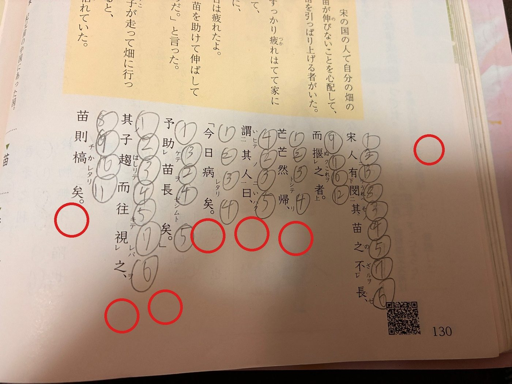
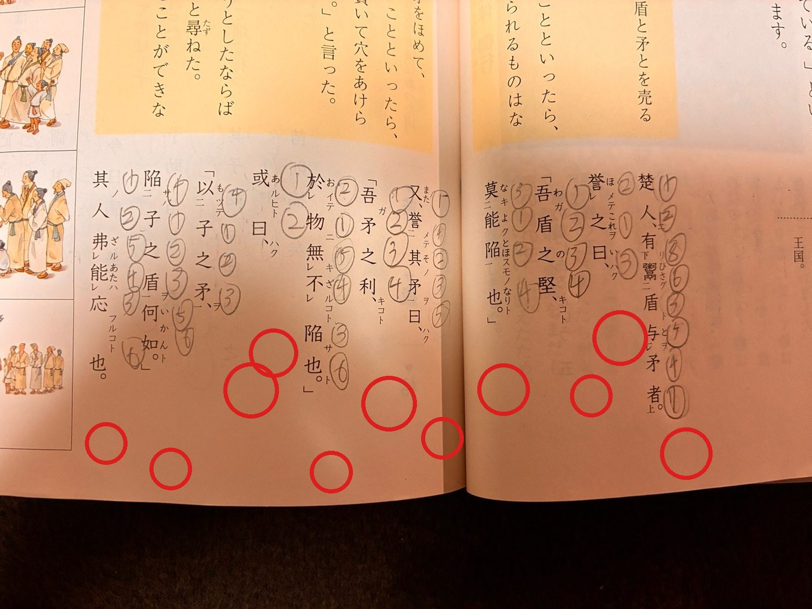

教科書の写真に、赤い○（正解）と×（ちがうところ）を付けました。数字を2組書いた文は、合っている組に○、ちがう組に×が付いています。
揠苗助長

- 全部の文が正解です。
- 「謂其人曰」は読む順番（其→人→謂→曰）は正解です。ただし数字が2・3・4・5と、1つずつ大きく振ってあります。
矛盾

- ○ 全部の文が正解です。番号は各文の右側に書かれたものが答えです。
- ○ 楚人有鬻盾與矛者は、與にレ点が付いているので、矛→與の順（矛4・與5）で合っています。
揠苗助長・矛盾 ― 教科書に書いた「読む順番の数字」の答え合わせ
作成：2026年11月22日
教科書の写真に、赤い○（正解）と×（ちがうところ）を付けました。数字を2組書いた文は、合っている組に○、ちがう組に×が付いています。

